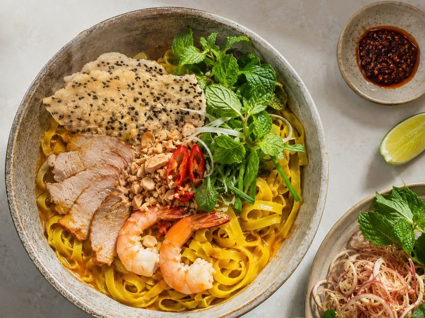
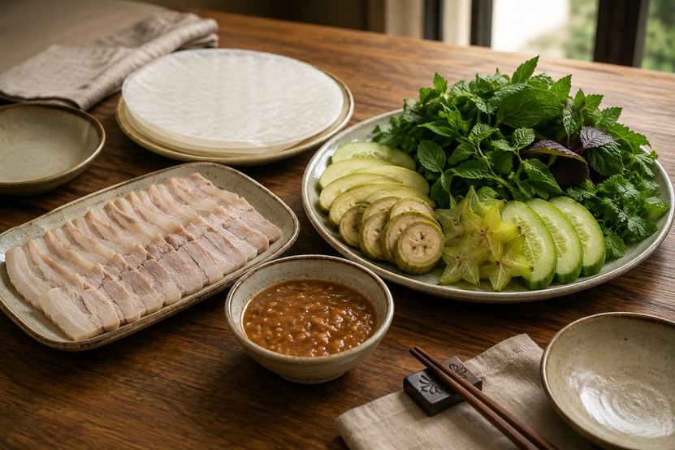

Living here
What Makes Da Nang Food Different From the Rest of Vietnam?
Bài viết này hiện chỉ có bản tiếng Anh. Menu và phần điều hướng đã chuyển sang tiếng Việt. Alice nói tiếng Việt và tiếng Anh, nhắn tin cho cô nếu bạn cần giải thích bằng tiếng Việt.
Key takeaways
- Da Nang belongs to the Quảng–Đà culinary tradition of Central Vietnam, which is bolder and more strongly seasoned than the delicate cooking of Hanoi or the sweeter food of the south.
- Mì Quảng is the signature dish. It is not a soup. The noodles come with only a small amount of intensely flavoured broth, finished with peanuts, herbs and a shard of rice cracker.
- Fermented fish sauces carry the flavour of the region. Nam Ô fish sauce and mắm nêm are behind much of what makes food here taste the way it does.
- The best of it is simple and inexpensive. A bowl in a small family shop is the real thing, not a lesser version of it.
What makes Da Nang cuisine distinct?
Da Nang cooks in the Quảng–Đà tradition, the food culture of Quảng Nam and Đà Nẵng. It is simple without being plain, and built on fresh ingredients treated with confidence.

The flavours are direct. Fish sauce, chilli, garlic, herbs, roasted peanuts, seafood pulled from the water that morning, and vegetables grown nearby. Dishes here are salty, savoury, aromatic, with heat and a quiet sweetness underneath. They are rarely subtle, and that is the point. What holds them together is balance rather than restraint.
Central Vietnam has historically been the poorer, harder part of the country, with a narrow strip of land between mountains and sea. The cooking reflects that. Nothing is wasted, portions are honest, and flavour is built from cheap ingredients handled well.
Central, northern and southern Vietnamese food compared
| Central (Da Nang) | Northern (Hanoi) | Southern (Saigon) | |
|---|---|---|---|
| Flavour profile | Bold, salty, spicy, aromatic | Delicate, balanced, restrained | Sweeter, richer, herb-heavy |
| Chilli | Used generously | Used sparingly | Moderate |
| Signature noodle dish | Mì Quảng | Phở | Hủ tiếu |
| Broth | Minimal, concentrated | Clear, long-simmered, generous | Sweeter, often with pork bone |
| Key seasoning | Fermented fish sauces, mắm nêm | Fish sauce, subtle use | Sugar, coconut, fish sauce |
| Herbs | Large mixed piles, banana flower, starfruit | Fewer, more specific | Abundant and varied |
| Character | Direct and rustic | Precise and refined | Generous and sweet |
If you have eaten Vietnamese food elsewhere and come here expecting the same thing, the difference registers immediately. This is a different cuisine within the same country.
The dishes Da Nang is known for
| Dish | What it is | When it is eaten |
|---|---|---|
| Mì Quảng | Wide turmeric rice noodles, minimal rich broth, pork and shrimp or chicken, peanuts, herbs, rice cracker | Breakfast and lunch |
| Bánh tráng cuốn thịt heo | Boiled pork rolled at the table in rice paper with herbs and green fruit, dipped in mắm nêm | Lunch and dinner, often shared |
| Gỏi cá Nam Ô | Fresh fish cured with lime and dressed with roasted rice powder, ginger, galangal, garlic and chilli | Lunch, usually as a trip out |
| Bún chả cá | Fish cake noodle soup with a clear, sweet-savoury broth | Breakfast |
| Bánh xèo and nem lụi | Small crisp rice pancakes and grilled lemongrass pork, wrapped in rice paper with peanut sauce | Late afternoon and evening |
| Seafood | Fish, prawns, crab, squid, clams, oysters, grilled or steamed | Dinner |
What is mì Quảng?
Mì Quảng is the most recognisable expression of Quảng–Đà cooking, and the dish to eat first if you eat only one.
Unlike phở, it is not a soup. Wide rice noodles, tinted yellow with turmeric, are served with only a small amount of intensely flavoured broth, just enough to coat rather than submerge. Shrimp and pork, or chicken, sit on top, finished with fresh herbs, roasted peanuts and a piece of crisp sesame rice cracker you break over the bowl yourself.
It carries a philosophy that runs through all central Vietnamese cooking. Use simple ingredients, but make every ingredient count.
Eaten mainly at breakfast and lunch. A good bowl costs very little, and the best versions come from shops that have made nothing else for decades.
What is bánh tráng cuốn thịt heo?
Thin slices of boiled pork, each with a strip of fat and skin down the middle, served with rice paper, a mountain of fresh herbs, green banana, starfruit and cucumber. You build each roll yourself at the table.

The ingredients could not be humbler. The experience is anything but.
What holds it together is mắm nêm, a fermented anchovy sauce with an aroma that arrives before the plate does. It is the flavour that makes the dish unmistakably central Vietnamese, and it is the reason locals order this when there is something worth celebrating.
What is gỏi cá Nam Ô?
If mì Quảng speaks for the land, gỏi cá Nam Ô speaks for the sea.
It comes from Nam Ô, a fishing village at the northern edge of the city. Fresh fish is cured with lime, then dressed with roasted rice powder, ginger, galangal, garlic, chilli and herbs, and eaten with a thick dipping sauce made from the fish itself.
This is a dish tied directly to the people who catch it. Very few visitors ever try it, which is a shame, because it is one of the best things Da Nang has and it exists nowhere else in quite this form.
Why does Nam Ô fish sauce matter?
Most great cooking traditions rest on one ingredient, and here it is fish sauce.
Nam Ô has been making it the traditional way for generations. Anchovies are layered with sea salt in wooden barrels and left to ferment for a year or more, with nothing added and nothing rushed. What comes out is darker and rounder than the industrial versions sold in supermarkets, and it changes the taste of everything it touches.
It is worth buying a bottle of the real thing once you live here. The difference between it and a mass-produced brand is roughly the difference between good olive oil and the cheapest bottle on the shelf.
What is the seafood like?
With a long coastline and a working fishing fleet, Da Nang has seafood in the way that coastal cities should.
Fish, prawns, crab, squid, clams and oysters are usually cooked simply. Grilled over charcoal, steamed with ginger and lemongrass, stir-fried, or thrown into a hotpot. The aim is to keep the natural sweetness rather than cover it, so the seasoning stays light and the sauces are served on the side.
This is one of the ordinary pleasures of living here. Fresh seafood, warm weather, and the ocean a few minutes from wherever you happen to be.
How food fits into daily life here
The best of Da Nang's food does not come from restaurants with tablecloths.
It is a bowl of mì Quảng in a shop with six plastic stools. Rice paper rolls shared across a table with too many hands reaching in. Fish bought at the market that morning. A family meal of vegetables, rice and a small dish of fish sauce in the middle that everyone reaches for.
These are everyday meals, and they carry more than food. Local ingredients, knowledge passed down without being written down, and the habit of eating together.
For anyone considering living here rather than visiting, this is the part that changes. Food stops being something you seek out and becomes the shape of a normal day. Coffee in the morning, the market on the way home, seafood by the beach on a Friday, and the simple business of eating well without thinking about it.
Humble, bold, fresh, coastal, warm. That is Da Nang at the table.
Frequently asked questions
What is Da Nang cuisine known for?
Da Nang is known for the Quảng–Đà style of Central Vietnamese cooking, which is bolder and more strongly seasoned than food in the north or south. The signature dishes are mì Quảng, bánh tráng cuốn thịt heo, gỏi cá Nam Ô and bún chả cá, alongside abundant fresh seafood.
What is mì Quảng?
Mì Quảng is a central Vietnamese noodle dish made with wide turmeric-coloured rice noodles served in a small amount of concentrated broth rather than a full soup. It is topped with pork and shrimp or chicken, fresh herbs, roasted peanuts and a piece of sesame rice cracker, and is eaten mainly at breakfast and lunch.
How is Central Vietnamese food different from northern and southern Vietnamese food?
Central Vietnamese food is saltier, spicier and more aromatic, making generous use of chilli and fermented fish sauces. Northern cooking is more delicate and restrained, while southern cooking is sweeter and richer. The three regions differ enough that they function as distinct cuisines.
What is mắm nêm?
Mắm nêm is a fermented anchovy sauce used across Central Vietnam, thicker and considerably more pungent than ordinary fish sauce. It is the essential dipping sauce for bánh tráng cuốn thịt heo and gives many local dishes their distinctive character.
What is gỏi cá Nam Ô?
Gỏi cá Nam Ô is a raw fish salad from the fishing village of Nam Ô in northern Da Nang. Fresh fish is cured with lime and dressed with roasted rice powder, ginger, galangal, garlic, chilli and herbs, then eaten with a thick dipping sauce made from the fish.
Is Da Nang food spicy?
It is spicier than food in Hanoi or Ho Chi Minh City, since chilli is used generously throughout Central Vietnam. Heat is usually served alongside the dish rather than cooked into it, so it can be adjusted at the table.
What seafood is Da Nang known for?
Fish, prawns, crab, squid, clams and oysters are all widely available and usually prepared simply by grilling, steaming or stir-frying to keep their natural sweetness. The city has a working fishing fleet, so seafood is landed locally and eaten fresh.
What is Nam Ô fish sauce?
Nam Ô fish sauce is a traditional fish sauce made in the Nam Ô fishing village of Da Nang, fermented from anchovies and sea salt in wooden barrels for a year or more. It is darker and rounder in flavour than mass-produced versions and is one of the defining ingredients of the local cuisine.